mydata <- read_csv("https://uoepsy.github.io/data/usmr_mlr.csv")
mymodel <- lm(y ~ x1 + x2, data = mydata)15: Interactions
This reading:
- What happens when the association between two variables depends on the level of a third? How can we build this into a linear model?
- Scaling and contrast schemes in the context of models with interactions
Holding Constant…
So far, when we’ve been using multiple linear regression models, all our coefficients have been being interpreted as the “change in \(y\) for a 1-unit change in \(x\) while holding constant the other predictors in the model”.
Consider a model with the following structure:
\[
y = b_0 + b_1 \cdot x_1 + b_2 \cdot x_2 + \epsilon
\]
When we fit this model structure to some data, we get out our estimated values for the coefficients \(b_0\), \(b_1\), and \(b_2\), e.g.,:
Coefficients:
Estimate Std. Error t value Pr(>|t|)
(Intercept) -2.39138 3.67735 -0.650 0.51867
x1 0.17570 0.06435 2.730 0.00888 **
x2 -0.64756 0.19959 -3.244 0.00217 **The coefficient we get out for \(x_1\) tells us that the model estimates that \(y\) will increase by 0.17 for every increase of 1 unit in \(x_1\), provided that we hold \(x_2\) constant.
So for any value of \(x_2\), a one unit increase in \(x_1\) is associated with a \(b_1\) change in \(y\), provided that \(x_2\) value stays as it is.
Let’s use our primate brains data for a more realistic example:
braindata <- read_csv("https://uoepsy.github.io/data/usmr_braindata.csv")
braindata <- braindata %>% mutate(
isMonkey = ifelse(species != "Human", "YES", "NO")
)
monkeymod <- lm(mass_brain ~ age + isMonkey, data = braindata)
summary(monkeymod)...
Coefficients:
Estimate Std. Error t value Pr(>|t|)
(Intercept) 0.668308 0.050478 13.240 1.57e-14 ***
age -0.004081 0.002337 -1.746 0.0904 .
isMonkeyYES -0.246933 0.044152 -5.593 3.54e-06 ***
---Our coefficient for isMonkeyYES coefficient is the estimated difference in brain mass between a human and a monkey of the same age.
Similarly, our coefficient for age is the estimated change in brain mass for every additional year of age, provided we are not comparing a monkey to a human.
The idea of this can be seen on the plot in Figure 1. Imagine 4 different participants in our data. The coefficient for isMonkeyYES is the difference between A and C, or the difference between B and D. It doesn’t matter where on the x-axis we go, it is the vertical distance between the two lines.
The age coefficient is the comparison between A and B, or between C and D.
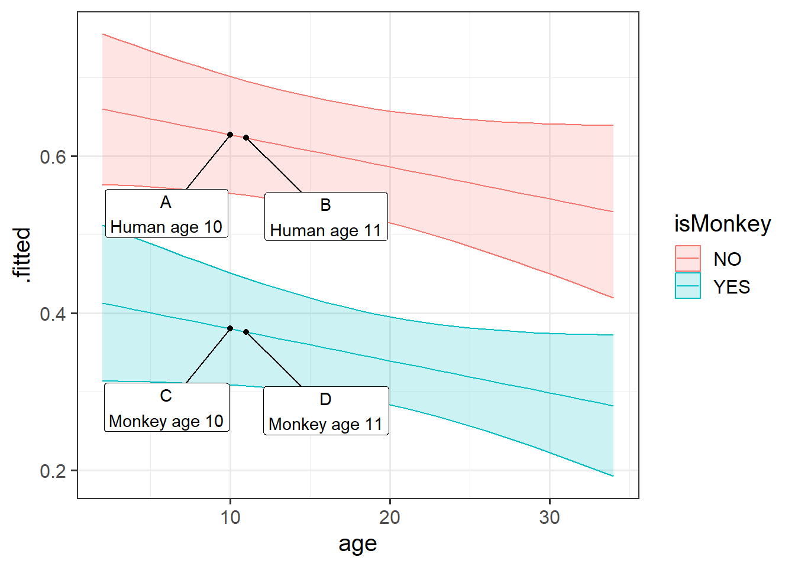
another example (if you want one)
We’re interested in estimating the association between BMI and cognition, after controlling for differences due to age.
We want to use this model:
\[
\text{score on test of cognition} = b_0 + b_1 \cdot \text{age} + b_2 \cdot \text{BMI} + \epsilon
\] which we can fit using lm():
lm(score ~ 1 + age + BMI, data = ourdata)and we might get some coefficients (estimates for the \(b_?\) values) such as those below:
(I’ve just made up some nice round numbers to make it easier to think about)
Coefficients:
Estimate ... ...
(Intercept) 160.000 ... ...
age -1.50000 ... ...
BMI -2.50000 ... ...The coefficient of interest, the one for BMI, is telling us that “a 1 unit increase in BMI is associated with a -2.5 decrease in Scores on the cognitive test, holding age constant”.
Consider 3 people:
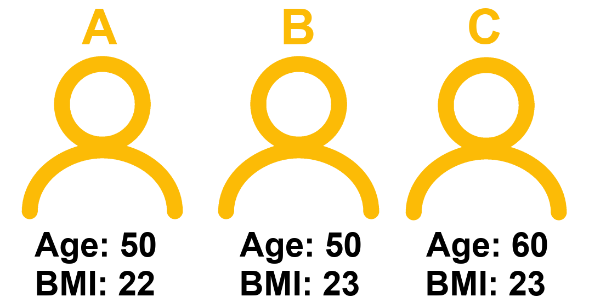
The coefficient for BMI represents the difference in cognitive scores we would expect between Person A and Person B.
Think about why this is.
For some person \(i\), their model predicted score is:
\[
\hat{score_i} = b_0 + b_1 \cdot age_i + b_2 \cdot BMI_i
\] Which from our model estimates is:
\[
\hat{score_i} = 160 - 1.5 \cdot age_i - 2.5 \cdot BMI_i
\]
- Person A’s score = \(160 - (1.5*50) - (2.5*22) = 30\)
- Person B’s score = \(160 - (1.5*50) - (2.5*23) = 27.5\)
- Person C’s score = \(160 - (1.5*60) - (2.5*23) = 12.5\)
The difference in model estimated Score between Person A and Person B is the coefficient of BMI, because those two people only differ on BMI. Person A and Person C also differ on age. This is how the coefficient of BMI is interpreted as “holding age constant” - it is a comparison between two hypothetical people who differ on BMI but are identical with respect to the other predictors in the model.
It Depends…
Sometimes, however, we might have reason to think that a certain association should not be the same at every value of another variable.
There are lots of practical cases where we might think that the relationship between two variables depends on the value of a third.
Below are some examples of this idea, where the explanatory variables (the predictors) are of different types (e.g. continuous, categorical, etc):
Example 1
The amount to which spending time with partner influences wellbeing depends on the quality of the relationship.
Variables:
- Outcome: Wellbeing (questionnaire score ranging from 0 to 32)
- Continuous Predictor: Time spent with partner (hours per day)
- Continuous Predictor: Relationship Quality (rating from 0 to 100)
Example 2
The influence of air-pollution on cognitive functioning depends on genetic status.
Variables:
- Outcome: Cognitive Functioning measured via the MMSE. Possible scores range from 0 to 30. Lower scores indicate poorer cognitive functioning
- Continuous Predictor: Air-Quality Pollution Index (AQI). Ranges from 0 to 500. The higher the AQI value, the greater the level of air pollution.
- Categorical Predictor: APOE-4 Genotype status: Negative vs Positive
Example 3
Trick-or-treating children are more greedy when their costume hides their identity. But this is different depending on whether they are alone or in a group.
Variables:
- Outcome: Number of candy bars taken while trick or treating
- Categorical Predictor: Whether or not the childs’ identity is hidden by their costume (anonymous vs identifiable)
- Categorical Predictor: Whether the child is trick or treating as a group or alone (alone vs group)
Interactions!
In each of the above examples, we can no longer think about “the relationship between [outcome] and [predictor]” without discussing the level of the other predictor.
Using Example 1 above, let’s return to thinking about this in terms of two different observations (i.e. two different people in Figure 3).
How do we think people’s wellbeing will differ between someone who spends 1 hour with their partner and someone who spends 2 hours with their partner?
If these are people from group A (these are people who have a really great relationship), then that extra hour will probably make a big impact on wellbeing!
Will it be the same for people from group B? People in group B are those people who don’t have great relationships. For these people, whether you spend 1 hour or 2 hours with your partner doesn’t pattern with a difference in wellbeing to the same extent as it does for the people in group A. It might even have a negative impact!
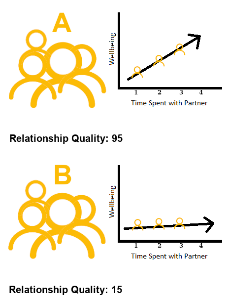
To capture this, what we need is an extra bit of information to tell us “how much does the association between ‘time spent with partner’ and wellbeing change as relationship quality changes?” And this is something we can include in our model, and get an estimate for!
We can model the idea of “the association between \(x_1\) and \(y\) changes depending on the level of \(x_2\)” by including a product (multiplication) term between the two predictors.
Such a model would take the form:
\[ y = b_0 + b_1 \cdot x_1 + b_2 \cdot x_2 + b_3 \cdot x_1 \cdot x_2 + \epsilon \]
What this is doing is saying that our outcome \(y\) is predicted by:
- some amount of \(x_1\)
- some amount of \(x_2\)
- and a little addition to each of those amounts depending on the value of of the other variable.
To provide a visual intuition and build on how we have been thinking of multiple regression upto this point, when we have two predictors that interact, our regression surface is no longer flat, but twists. This is because the slope along values of \(x_1\) changes as we move up \(x_2\):
why is it multiplication?
If we think about the simple additive model (additive = without the interaction), then what we’re saying is that the effect of \(x_1\) on \(y\) is simply \(b_1\), which is a constant (i.e. just a single number).
\[
y = b_0 + \underbrace{b_1}_{\text{effect}\\ \text{of } x_1} \cdot x_1 + b_2 \cdot x_2 + \epsilon
\] But what we want to model is that “the effect of \(x_1\) depends on \(x_2\)”, so the effect is not just a single constant number, it’s more like “some number plus an amount of \(x_2\)”.
For “an amount of \(x_2\)” let’s use \(b_3 \cdot x_2\):
\[ y = b_0 + \underbrace{(\overbrace{b_1}^{\,\,\text{ some}\\ \text{number}} + \overbrace{b_{3} \cdot x_2}^{\text{some amount of }x_2})}_{\text{effect of } x_1} \cdot x_1 + b_2 \cdot x_2 + \epsilon \]
Which really expands out to:
\[ y = b_0 + b_1 \cdot x_1 + b_3 \cdot x_2 \cdot x_1 + b_2 \cdot x_2 + \epsilon \]
Example 1
The amount to which spending time with my partner influences my wellbeing depends on the quality of our relationship.1
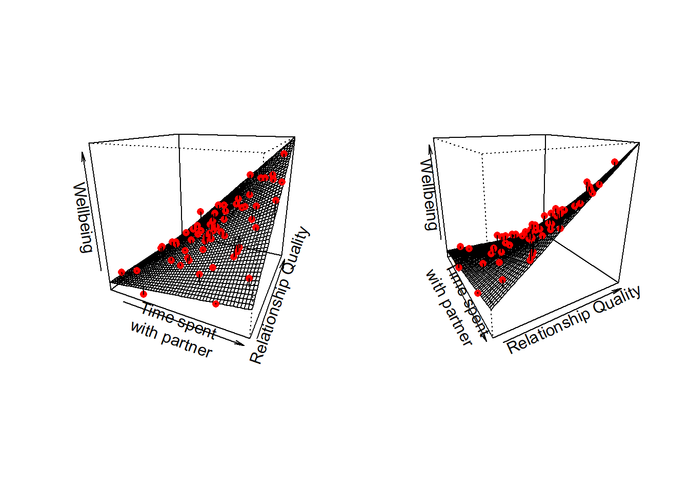
At high values of relationship quality, the amount wellbeing increases with time spent is greater than it is at low values of relationship quality.
And we can phrase this the other way around: at high amounts of time spent with partner, relationship quality has a bigger effect on wellbeing than it does for low amounts of time spent.
In the model with this interaction:
\[
\text{wellbeing} = b_0 + b_1 \cdot \text{time} + b_2 \cdot \text{quality} + b_3 \cdot \text{time} \cdot \text{quality}
\] The interaction coefficient \(b_3\) is the adjustment we make to the slope of wellbeing with “time spent with partner”, as we move 1 up in “relationship quality”.2
Example 2
The influence of air-pollution on cognitive functioning depends on your genetic status.3
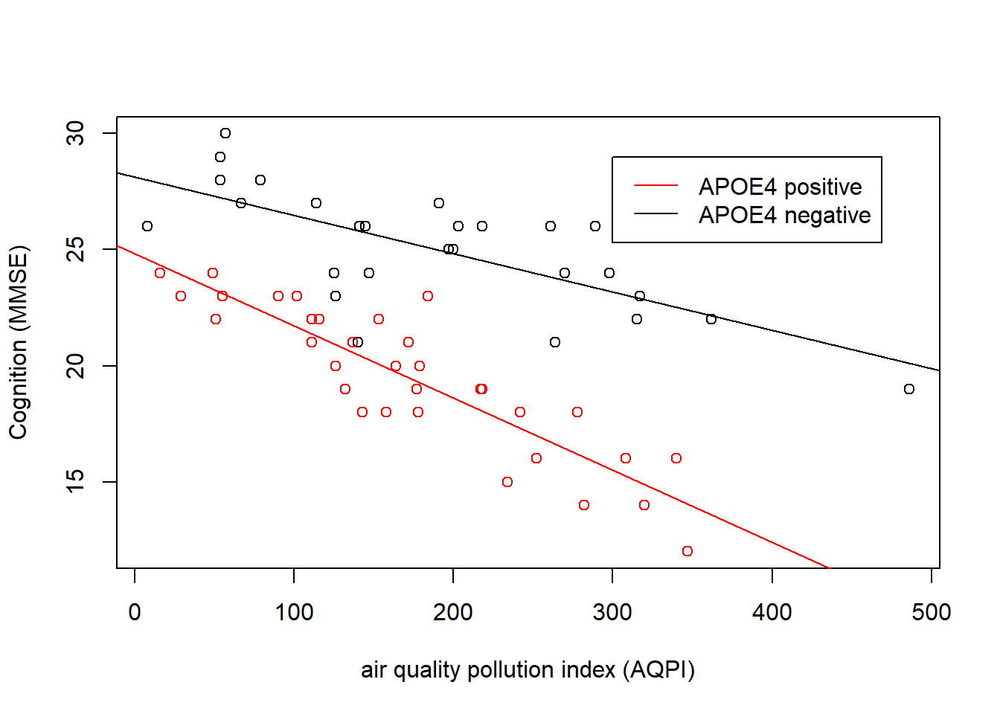
This kind of interaction (where one predictor is continuous and the other is categorical), is sometimes the easiest to think about.
We can see in Figure 5 that cognition decreases as air pollution increases, but this is different depending on genetic status. In the APOE4-positive group, the association is steeper than in the APOE4-negative group. The interaction is evident in that the two lines are non-parallel.
In the model:
\[ \text{Cognition} = b_0 + b_1 \cdot\text{pollution} + b_2\cdot\text{APOE4} + b_3\cdot\text{pollution} \cdot \text{APOE4} \]
The interaction term \(b_3\) is the estimated adjustment made to the slope of cogition across air pollution when we move from one group to the other. e.g. the slope for the APOE4-positive group is equal to the slope of the APOE4-negative group plus the interaction term.
Example 3
The influence of being anonymous on childrens’ greedy behaviours depends on if they are alone or part of a group.4

For interactions between two categorical variables, we tend to plot the mean of the outcome variable for each combination of levels. We can see the interaction in Figure 6 in the fact that the two dotted lines we have added to join the group-means are not parallel.
Children who are anonymous tend to take more candybars than those who are identifiable, but this difference is much greater when children are trick of treating in a group than when they are doing so alone!
In the model \[ \text{candy} = b_0 + b_1 \cdot\text{isAnon} + b_2\cdot\text{inGroup} + b_3\cdot\text{isAnon} \cdot \text{inGroup} \]
The interaction term \(b_3\) is going to be the estimated adjustment to the difference between anonymous vs identifiable for children in a group vs those alone. Put another way, it is how the difference between the two blue dots in alone vs group for is different from the difference between the two red dots.
e.g. the difference between anonymous & identifiable children in a group is equal to the difference between anonymous & identifiable children who are alone plus the interaction term.
Fitting interactions in R
In R, the interaction term gets denoted by a colon : between the two predictor variables. We can fit an interaction term in a regression model quite easily in R:
# we don't *need* to put the 1, it's up to you :)
lm(y ~ 1 + x1 + x2 + x1:x2, data = dataset)This maps to the model equation we saw earlier: \[ y = b_0 + b_1\cdot x_1 + b_2 \cdot x_2 + b_3 \cdot x_1 \cdot x_2 + \epsilon \]
Shortcut
To express x1 + x2 + x1:x2, we can also use just x1*x2.
These two models are equivalent:
lm(y ~ 1 + x1 + x2 + x1:x2, data = dataset)
lm(y ~ 1 + x1*x2, data = dataset)If we fit the interaction x1:x2, we almost always want to also fit the separate effects x1 and x2.
“Except in special circumstances, a model including a product term for interaction between two explanatory variables should also include terms with each of the explanatory variables individually, even though their coefficients may not be significantly different from zero. Following this rule avoids the logical inconsistency of saying that the effect of \(x_1\) depends on the level of \(x_2\) but that there is no effect of \(x_1\).” Ramsey & Schafer
Interpretation
When we include an interaction term in our model, we are saying that two effects of the two predictors on the outcome are dependent upon one another. This means that with an interaction in the model lm(y ~ x1 + x2 + x1:x2) we can no longer talk about the “effect of \(x_1\) on \(y\)‘holding \(x_2\) constant’”. Instead we have to talk about marginal effects - e.g. the effect of \(x_1\) at a specific value of \(x_2\).
When we fit a model with an interaction in R, we get out coefficients for both predictors, and for the interaction. The coefficients for each individual predictor reflect the effect on the outcome when the other predictor is zero.
lm(formula = y ~ x1 * x2, data = df)
...
...
Coefficients:
Estimate Std. Error t value Pr(>|t|)
(Intercept) ... .... ... ...
x1 ... .... ... ...
x2 ... .... ... ...
x1:x2 ... .... ... ...
---marginal effects when the other predictor is zero
The individual coefficients for each predictor that is involved in an interaction are estimated when the other predictor in the interaction is zero.
These coefficients can be interpreted, in turn as:
| Coefficient | Interpretation |
|---|---|
(Intercept) |
the estimated \(y\) when all predictors (\(x_1\) and \(x_2\)) are zero is [estimate] |
x1 |
when \(x_2\) is zero, a 1 unit increase in \(x_1\) is associated with a [estimate] change in \(y\) |
x2 |
when \(x_1\) is zero, a 1 unit increase in \(x_2\) is associated with a [estimate] change in \(y\). |
x1:x2 |
as \(x_2\) increases by 1, the association between \(x_1\) and \(y\) changes by [estimate] or as \(x_1\) increases by 1, the association between \(x_2\) and \(y\) changes by [estimate] |
What if there are other things in the model too?
Note that the interaction x1:x2 changes how we interpret the individual coefficients for x1 and x2.
It does not change how we interpret coefficients for other predictors that might be in our model. For variables that aren’t involved in the interaction term, these are still held constant.
For example, suppose we also had another predictor \(c_1\) in our model:
lm(y ~ c1 + x1 + x2 + x1:x2)| Coefficient | Interpretation |
|---|---|
(Intercept) |
the estimated \(y\) when all predictors (\(c_1\), \(x_1\) and \(x_2\)) are zero is [estimate] |
c1 |
a 1 unit increase in \(c_1\) is associated with a [estimate] increase in \(y\), holding constant all other variables in the model (\(x_1\) and \(x_2\)) |
x1 |
holding \(c_1\) constant, when \(x_2\) is zero, a 1 unit increase in \(x_1\) is associated with a [estimate] change in \(y\) |
x2 |
holding \(c_1\) constant, when \(x_1\) is zero, a 1 unit increase in \(x_2\) is associated with a [estimate] change in \(y\). |
x1:x2 |
holding \(c_1\) constant, as \(x_2\) increases by 1, the association between \(x_1\) and \(y\) changes by [estimate] or holding \(c_1\) constant, as \(x_1\) increases by 1, the association between \(x_2\) and \(y\) changes by [estimate] |
Example 1
The amount to which spending time with my partner influences my wellbeing depends on the quality of our relationship.
# data
ptdat <- read_csv("https://uoepsy.github.io/data/usmr_partnertime.csv")
# model
eg1mod <- lm(wellbeing ~ partner_time * relationship_qual, data = ptdat)
summary(eg1mod)
Call:
lm(formula = wellbeing ~ partner_time * relationship_qual, data = ptdat)
Residuals:
Min 1Q Median 3Q Max
-3.5592 -0.5559 0.1243 0.8884 3.2944
Coefficients:
Estimate Std. Error t value Pr(>|t|)
(Intercept) 14.413160 2.192467 6.574 1.75e-08 ***
partner_time -1.405842 0.293737 -4.786 1.28e-05 ***
relationship_qual -0.055658 0.036693 -1.517 0.135
partner_time:relationship_qual 0.044363 0.004862 9.124 1.14e-12 ***
---
Signif. codes: 0 '***' 0.001 '**' 0.01 '*' 0.05 '.' 0.1 ' ' 1
Residual standard error: 1.281 on 56 degrees of freedom
Multiple R-squared: 0.9377, Adjusted R-squared: 0.9343
F-statistic: 280.8 on 3 and 56 DF, p-value: < 2.2e-16- For someone who spends 0 hours with their partner, and who has a relationship quality score of 0, their estimated wellbeing is 14.41.
- For someone who has a relationship quality score of 0, every hour spent with their partner is associated with a -1.41 change in wellbeing.
- For someone who spends 0 hours with their partner, an increase of 1 in the relationship quality is associated with a -0.06 change in wellbeing.
- For every 1 increase in relationship quality, an extra hour spent with their partner is associated with an additional 0.04 change in wellbeing.
Example 2
The influence of air-pollution on cognitive functioning depends on your genetic status.
# data
airpol <- read_csv("https://uoepsy.github.io/data/usmr_airpol.csv")
# model
eg2mod <- lm(mmse ~ aqpi * apoe4, data = airpol)
summary(eg2mod)
Call:
lm(formula = mmse ~ aqpi * apoe4, data = airpol)
Residuals:
Min 1Q Median 3Q Max
-4.8225 -1.0241 0.2269 0.9554 3.8932
Coefficients:
Estimate Std. Error t value Pr(>|t|)
(Intercept) 28.128929 0.642991 43.747 < 2e-16 ***
aqpi -0.016474 0.002930 -5.623 6.18e-07 ***
apoe4pos -3.297908 0.904448 -3.646 0.000584 ***
aqpi:apoe4pos -0.014635 0.004405 -3.322 0.001578 **
---
Signif. codes: 0 '***' 0.001 '**' 0.01 '*' 0.05 '.' 0.1 ' ' 1
Residual standard error: 1.674 on 56 degrees of freedom
Multiple R-squared: 0.8344, Adjusted R-squared: 0.8255
F-statistic: 94.06 on 3 and 56 DF, p-value: < 2.2e-16- For people who are APOE4 negative (the reference level, see Chapter 11 #multiple-categories-multiple-regression), living where the Air Quality Pollution Index is 0 (no pollution), the estimated score on the MMSE (mini mental state exam) is 28.13.
- For people who are APOE4 negative, a 1 unit increase in air pollution is associated with a -0.02 change in MMSE scores.
- For people living with 0 air pollution, being APOE4 positive is associated with -3.3 lower MMSE scores compared to APOE4 negative
- Compared to APOE4 negative, being APOE4 positive is associated with -0.01 greater decrease in MMSE scores for every 1 increase in air pollution.
Example 3
The influence of being anonymous on childrens’ greedy behaviours depends on if they are alone or part of a group.
# data
candy <- read_csv("https://uoepsy.github.io/data/usmr_candy.csv")
# model
eg3mod <- lm(candybars ~ anonymity * asgroup, data = candy)
summary(eg3mod)
Call:
lm(formula = candybars ~ anonymity * asgroup, data = candy)
Residuals:
Min 1Q Median 3Q Max
-2.9000 -0.3636 0.0000 0.9444 1.9444
Coefficients:
Estimate Std. Error t value Pr(>|t|)
(Intercept) 10.0556 0.2236 44.974 < 2e-16 ***
anonymityidentifiable -2.0556 0.3047 -6.746 9.08e-09 ***
asgroupgroup 3.8444 0.3741 10.276 1.69e-14 ***
anonymityidentifiable:asgroupgroup -4.4808 0.5144 -8.711 5.31e-12 ***
---
Signif. codes: 0 '***' 0.001 '**' 0.01 '*' 0.05 '.' 0.1 ' ' 1
Residual standard error: 0.9486 on 56 degrees of freedom
Multiple R-squared: 0.8548, Adjusted R-squared: 0.847
F-statistic: 109.9 on 3 and 56 DF, p-value: < 2.2e-16- An anonymous child trick or treating alone is estimated to take 10 candybars.
- When trick or treating alone, compared to an anonymous child, an identifiable child is estimated to take 2 fewer candybars.
- When anonymous, compared to trick or treating alone, children who are part of a group are estimated to take 3.8 more candybars.
- The difference between identifiable and anonymous children’s candybar taking is 4 fewer when children are trick or treating in a group than when they are alone.
Visualisation
We have seen lots of 3-dimensional plots above to try and help in building our intuition about how we model an interaction. However, we typically don’t really want to visualise models like this (in part because our models often have more than 2 predictors, and so have more than 3 dimensions).
What we therefore need to do is find ways to represent these relationships in 2-dimensional plots. This is slightly different depending on the type of variables we are dealing with.
- For a continuous \(\times\) categorical interaction, we can plot the association of the continuous predictor with the outcome for each level of the categorical variable.
- For a continuous \(\times\) continuous interaction, we can plot the association of one predictor at some judiciously chosen values of the other (e.g. at the min, mean and max, or at -1 SD, mean, and +1 SD).
- For a categorical \(\times\) categorical interaction, we can plot the various estimated group means, with optional dotted5 lines to illustrate the non-parallelism
optional helper packages
We can make these sort of plots very easily using handy packages that are designed to make our lives easier. The big downsides are that reliance on these packages will a) make it harder to customise plots, b) make it harder to troubleshoot when things go wrong, and c) stop us from having to think (and thinking is always good!).
Use with caution:
- From the sjPlot package:
plot_model(model, type = "int")orplot_model(model, type = "eff", terms = c("x1","x2"))
- From the interactions package:
interact_plot(model, pred = "x1", modx = "x2"), andcat_plot()for categorical interactions.
Example 1
The amount to which spending time with my partner influences my wellbeing depends on the quality of our relationship.
Plotting continuous by continuous interactions requires choosing a set of values for one of our predictors, at which we plot the slope of the other.
Here, we could choose to plot the slope of wellbeing ~ partner_time for the mean relationship_qual, and for 1 SD above and below that mean.
Code
# data
ptdat <- read_csv("https://uoepsy.github.io/data/usmr_partnertime.csv")
# model
eg1mod <- lm(wellbeing ~ partner_time * relationship_qual, data = ptdat)
# plot data
plotdat <- expand_grid(
partner_time = 0:13, #min to max of sample
relationship_qual = c(
mean(ptdat$relationship_qual)-sd(ptdat$relationship_qual),
mean(ptdat$relationship_qual),
mean(ptdat$relationship_qual)+sd(ptdat$relationship_qual)
)
)
# plot
broom::augment(eg1mod, newdata = plotdat, interval="confidence") |>
ggplot(aes(x=partner_time, y=.fitted,
col=relationship_qual,
group=relationship_qual))+
geom_point(data = ptdat,aes(y=wellbeing))+
geom_line()+
geom_ribbon(aes(ymin=.lower,ymax=.upper,fill=relationship_qual),
alpha=.2)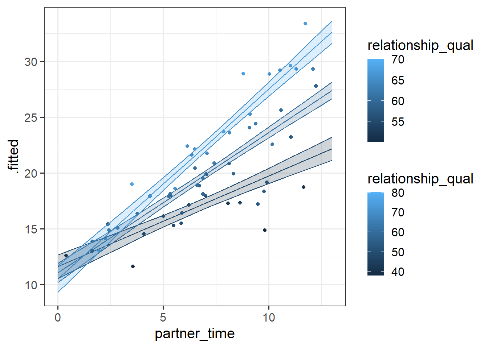
Example 2
The influence of air-pollution on cognitive functioning depends on your genetic status.
This is the most straightforward type of interaction to visualise, as there are only a set number of values that one of the variables can take, meaning only a finite number of lines we need to draw:
Code
# data
airpol <- read_csv("https://uoepsy.github.io/data/usmr_airpol.csv")
# model
eg2mod <- lm(mmse ~ aqpi * apoe4, data = airpol)
# plot data
plotdat <- expand_grid(
aqpi = 0:500,
apoe4 = c("neg","pos")
)
# plot
broom::augment(eg2mod, newdata = plotdat, interval="confidence") |>
ggplot(aes(x=aqpi, y = .fitted,
col = apoe4, fill = apoe4)) +
geom_point(data = airpol, aes(y = mmse), alpha=.3, size=3) +
geom_line() +
geom_ribbon(aes(ymin=.lower,ymax=.upper), alpha=.3)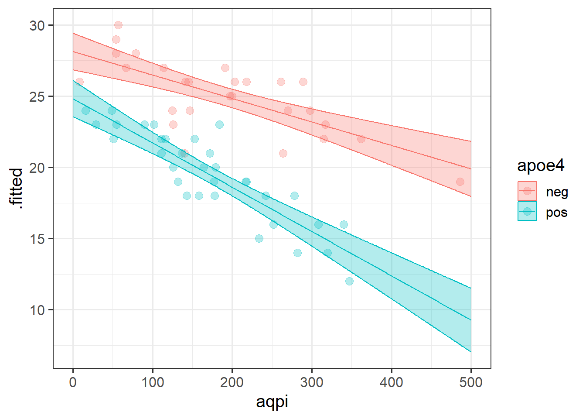
Example 3
The influence of being anonymous on childrens’ greedy behaviours depends on if they are alone or part of a group.
For these types of interactions (between categorical variables), plotting the estimates from our model is best done as our set of estimated group means.
Code
# data
candy <- read_csv("https://uoepsy.github.io/data/usmr_candy.csv")
# model
eg3mod <- lm(candybars ~ anonymity * asgroup, data = candy)
# plot data
plotdat <- expand_grid(
anonymity = c("anonymous","identifiable"),
asgroup = c("alone","group")
)
# plot
broom::augment(eg3mod, newdata=plotdat, interval="confidence") |>
ggplot(aes(x = anonymity, col = asgroup)) +
geom_jitter(data = candy, aes(y = candybars),
alpha = .3, size = 3,
height = 0, width = .2) +
geom_pointrange(aes(y=.fitted, ymin=.lower, ymax=.upper),
position = position_dodge(width=.2))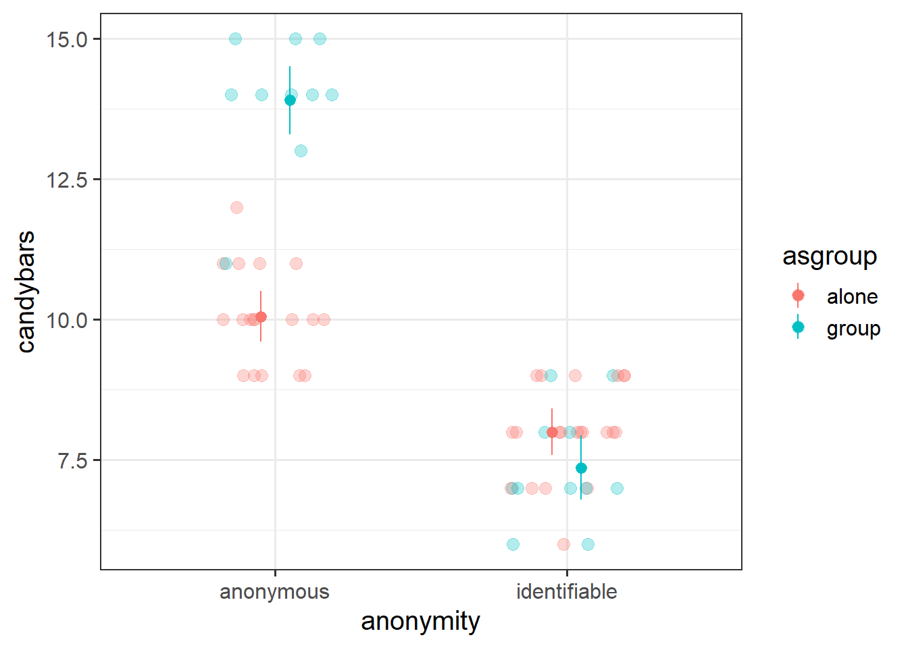
Getting more from your model
Reporting on interactions is a bit like telling a story. Listing the interpretation of the coefficients is fine, but often reads a bit awkwardly. A good presentation of the results would provide the reader with the overall pattern of results, pulling out the key parts that are of interest. There are various things we can do to get out coefficients that might be of more use to us in telling our story.
Mean Centering
By mean centering a continuous predictor, we change what “0” means. Normally, when we don’t have an interaction, this simply changes the intercept value (see Chapter 13 #centering-and-scaling-predictors). If we have the interaction y ~ x1 + x2 + x1:x2, then mean centering x1 will make the coefficient for x2 now represent “the association between \(x_2\) and \(y\) for someone at the average of \(x_1\)”.
Using one of our examples from throughout this reading, we might mean-center the air-pollution so that we can consider the difference in MMSE scores between APOE4 positive and negative people at the average air-pollution level
# data
airpol <- read_csv("https://uoepsy.github.io/data/usmr_airpol.csv")
# model with original variable
eg2mod <- lm(mmse ~ aqpi * apoe4, data = airpol)
# model with mean centered predictor
eg2mod_cent <- lm(mmse ~ scale(aqpi,scale=FALSE) * apoe4, data = airpol)# coefficients:
coef(eg2mod) (Intercept) aqpi apoe4pos aqpi:apoe4pos
28.12892936 -0.01647447 -3.29790816 -0.01463533 coef(eg2mod_cent) (Intercept) scale(aqpi, scale = FALSE)
25.16379896 -0.01647447
apoe4pos scale(aqpi, scale = FALSE):apoe4pos
-5.93202402 -0.01463533 This is because the coefficient for APOE4 compares the heights of the two lines when the other predictor is zero. So if we change what “zero” represents, we can change what that estimates. In the model plots below, we can see that the model doesn’t change, it is just extracting different information (it is the distance to move from the blue dot to the red dot):
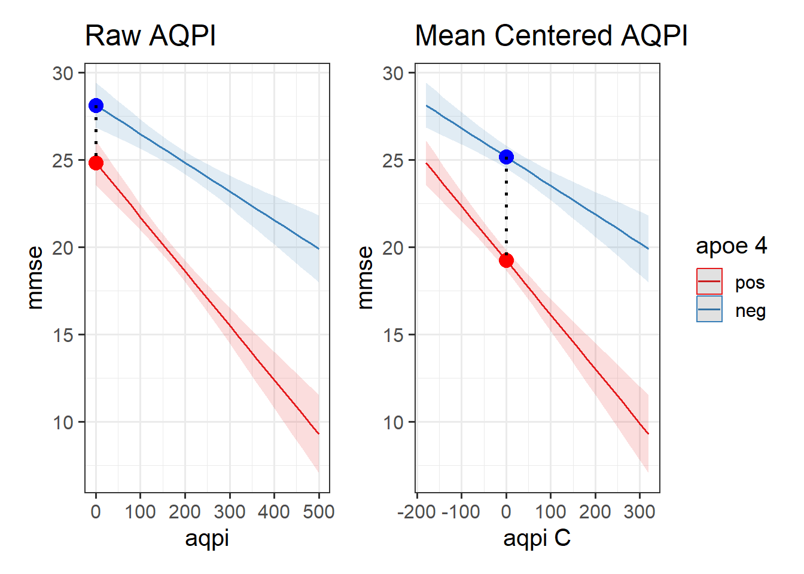
Relevelling Factors
Another thing that can be useful (especially when working with categorical variables with lots of levels) is to make sure your variables are factors in R, and to set a useful reference level. Typically, the reference level is what we think of as “normal”, e.g. if we have 3 groups: Placebo, Drug A, and Drug B, then we might compare each drug to the placebo condition, because that’s comparable to most people (i.e. who aren’t taking the drug).
For example, when we have two categorical variables:
- anonymity = “anonymous” vs “identifiable”
- asgroup = “alone” vs “group”
Then the default is to take the alphabetical ordering. We can change the ordering using functions that “relevel” a factor. Note, this only works if the variable is already a factor in R (see Chapter 3 #categorical for a reminder of ‘factors’).
# data
candy <- read_csv("https://uoepsy.github.io/data/usmr_candy.csv")
# make both predictors 'factors'
candy <-
candy %>%
mutate(
anonymity = factor(anonymity),
asgroup = factor(asgroup)
)Once they are factors, we can see the default levels:
levels(candy$anonymity)[1] "anonymous" "identifiable"levels(candy$asgroup)[1] "alone" "group"This is the original model, with the default levels:
eg3mod <- lm(candybars ~ anonymity * asgroup, data = candy)
coef(eg3mod) (Intercept) anonymityidentifiable
10.055556 -2.055556
asgroupgroup anonymityidentifiable:asgroupgroup
3.844444 -4.480808 Let’s relevel anonymity to have “identifiable” as the first level, and then refit the model:
candy <-
candy %>%
mutate(
anonymity = fct_relevel(anonymity, "identifiable")
)
eg3mod_rel <- lm(candybars ~ anonymity * asgroup, data = candy)
coef(eg3mod_rel) (Intercept) anonymityanonymous
8.0000000 2.0555556
asgroupgroup anonymityanonymous:asgroupgroup
-0.6363636 4.4808081 Again, the model doesn’t change, we are simply extracting different bits from it:
reference level = “anonymous”
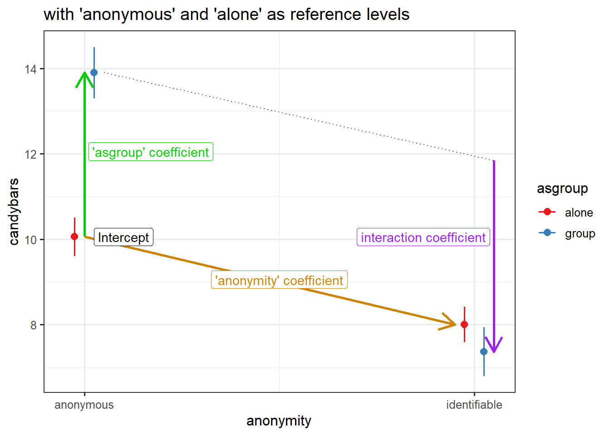
reference level = “identifiable”
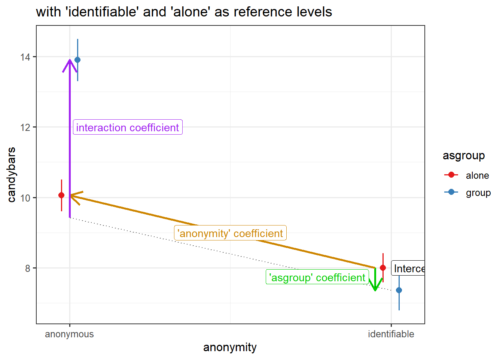
Optional: Interactions and Sum Contrasts
When we have categorical predictors, our choice of contrasts coding changes the bits that we’re getting our of our model.
Suppose we have a 2x2 design (condition A and B, in groups 1 and 2):
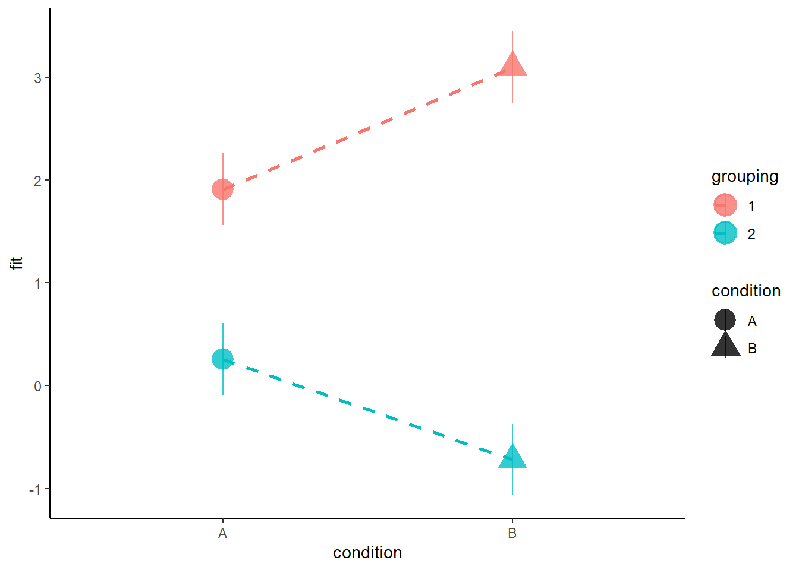
When we are using the default contrasts coding (treatment - see Chapter 14 #contrasts) in R, then our coefficients for the individual predictors represent moving between the dots in Figure 7.
Coefficients:
Estimate Std. Error t value Pr(>|t|)
(Intercept) 1.9098 0.1759 10.855 < 2e-16 ***
conditionB 1.1841 0.2488 4.759 5.65e-06 ***
grouping2 -1.6508 0.2488 -6.635 1.09e-09 ***
conditionB:grouping2 -2.1627 0.3519 -6.146 1.15e-08 ***
---- The intercept is the red circle in Figure 7.
- The coefficient for condition is the difference between the red circle and the red triangle in Figure 7.
- The coefficient for grouping is the difference between the red circle and the blue circle in Figure 7.
- The interaction coefficient is the difference from the slope of the red line to the slope of the blue line.
However, when we change to using sum contrasts, we’re switching where zero is in our model. So if we change to sum contrasts (here we’ve changed both predictors to using sum contrasts), then we end up estimating the effect of each predictor averaged across the other.
Coefficients:
Estimate Std. Error t value Pr(>|t|)
(Intercept) 1.13577 0.08796 12.912 < 2e-16 ***
conditionB 0.05141 0.08796 0.584 0.56
grouping2 -1.36607 0.08796 -15.530 < 2e-16 ***
conditionB:grouping2 -0.54066 0.08796 -6.146 1.15e-08 ***
---- The intercept is the grey X in Figure 8.
- The coefficient for condition is the difference between the grey X and the grey triangle in Figure 8.
- The coefficient for grouping is the difference between the grey X and the blue line in Figure 8.
- The interaction coefficient is the difference from the slope of the grey line to slope of the blue line.
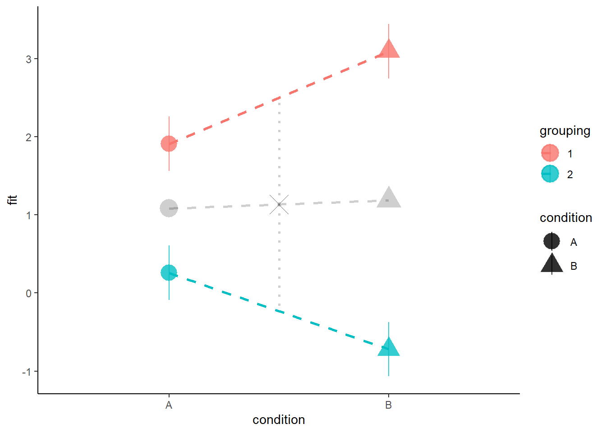
It can get quite confusing when we start switching up the contrasts, but it’s all just because we’re changing what “zero” means, and what “moving 1” means:
Treatment contrasts
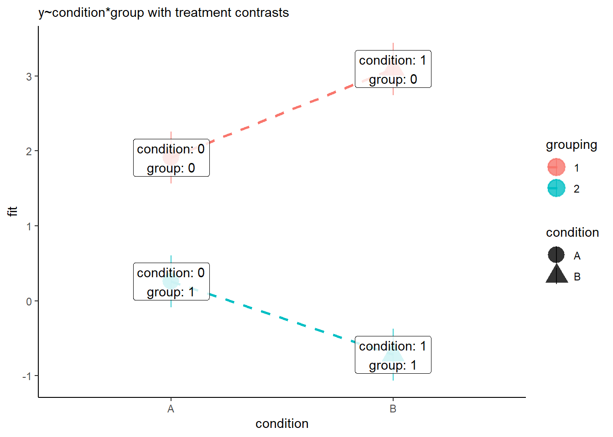
Sum contrasts
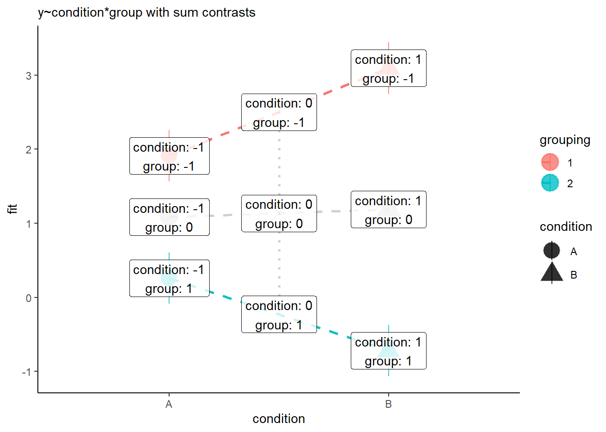
Optional Extra: Getting non-linear
You might be noticing that when we start talking about our regression surface “twisting” (e.g. in Figure 4), we’re starting to see curves in our model.
We can model curves in a “linear” model!?
An interaction does in a sense introduce non-linearity to our thinking, because there we no longer think of a linear effect of \(x_1\) (it “depends on” \(x_2\)). This a little bit of a trick, because ultimately our model is still linear - we are estimating our outcome \(y\) as the linear combination of a set of predictors. In the model \(y = b_0 + b_1 \cdot x_1 + b_2 \cdot x_2 + b_3 \cdot x_1 \cdot x_2\), the adjustment that we make \(b_3\) to each of the coefficients \(b_1\) and \(b_2\) is a constant.
We can even exploit this to model more clearly “non-linear” associations, such as the age and height example below.
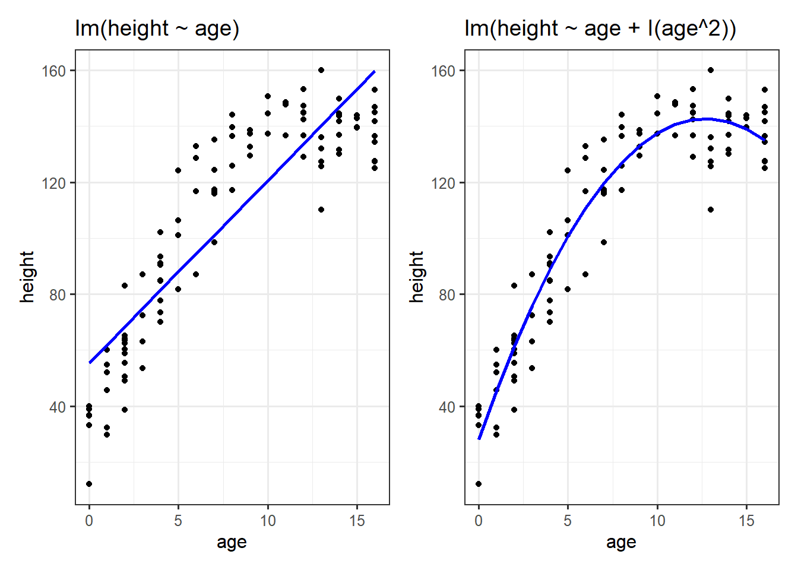
We will cover this a lot more in the multivariate stats course, so don’t worry too much about it right now.
However, it’s useful as a means of seeing how we can extend linear models to fit these sort of relationships. In the model on the right of Figure 9, the model returns three coefficients:
Estimate Std. Error t value Pr(>|t|)
(Intercept) 28.09831 2.88606 9.736 4.99e-16 ***
age 18.04500 0.88602 20.366 < 2e-16 ***
I(age^2) -0.71034 0.05299 -13.406 < 2e-16 ***It is estimating a persons’ height as:
- an intercept of 28.1 (the estimated height of a newborn baby of age 0)
- plus 18.04 cm for every year of age they have
- plus -0.71 cm for every year of age they have, squared.
So for a 4 year old, the estimated height is:
\[ height = 28.1 + (18.04 \times 4) + (-0.71 \times 4^2) = 88.9 \] and for a 10 year old, it is:
\[ height = 28.1 + (18.04 \times 10) + (-0.71 \times 10^2) = 138.1 \] We can see how the quadratic “\(\text{age}^2\) term has a larger (negative) effect as age increases (for the 4 year old it makes the estimated height \(-0.71 \times 4^2 = -11.4\) lower, and for the 10 year old it makes the estimated height \(-0.71 \times 10^2 = -71\) lower). This captures the plateauing of heights as children get older.
Footnotes
This example comes from Ian Hajnosz, who previously tutored on USMR↩︎
And vice versa! It is also the adjustment we make to the slope of wellbeing with “relationship quality”, as we move 1 up in “time spent with partner”↩︎
This example comes from Otto Jutila, who previously tutored on USMR↩︎
This example comes from Tia Gong, who previously tutored on USMR↩︎
dotted is a good way to indicate that there is no data across that line - it is linking two categories. Martin disagrees and thinks you should never have lines↩︎